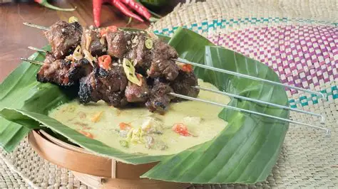
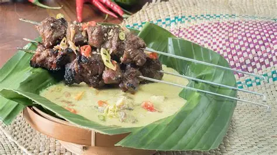

Sate Klathak adalah hidangan khas Yogyakarta yang terkenal dengan cita rasa yang unik dan cara penyajian yang berbeda. Sate ini terbuat dari daging kambing yang ditusuk dengan menggunakan jeruji sepeda, memberikan rasa yang khas dan tekstur yang empuk. Dagingnya dibumbui dengan rempah-rempah sederhana dan kemudian dipanggang di atas bara api, sehingga menghasilkan aroma yang menggugah selera.
Sate Klathak biasanya disajikan dengan kuah kaldu yang segar dan nasi putih. Hidangan ini menjadi salah satu kuliner yang wajib dicoba saat berkunjung ke Yogyakarta, karena kelezatan dan keunikan cara penyajiannya yang mencerminkan kekayaan kuliner lokal.